Hirakawa
Hirakawa · Aomori
Hirakawa
Highlighted on the Aomori map.
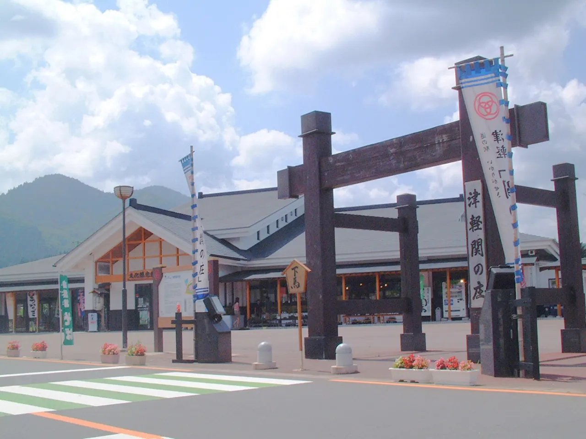
Stay
青森のお宿 ホテルアップルランド
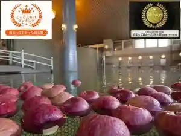
Aomori Noo Yado Hoteruappururando
柏木温泉
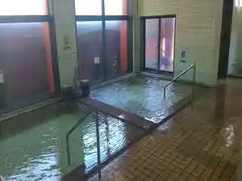
Kashiwagi Onsen
大坊温泉 大坊保養センター
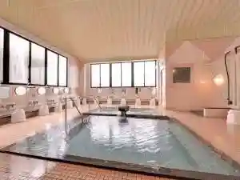
Daibou Onsen Daibou Hoyou Sentaa
Dining
大前寿し
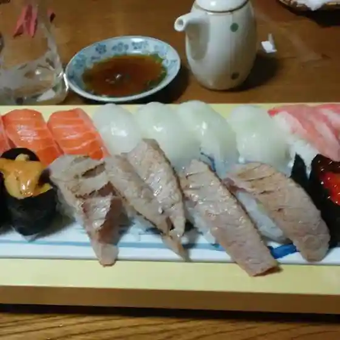
Oomae Hisashi Shi
津軽おのえ温泉 日帰り宿 福家
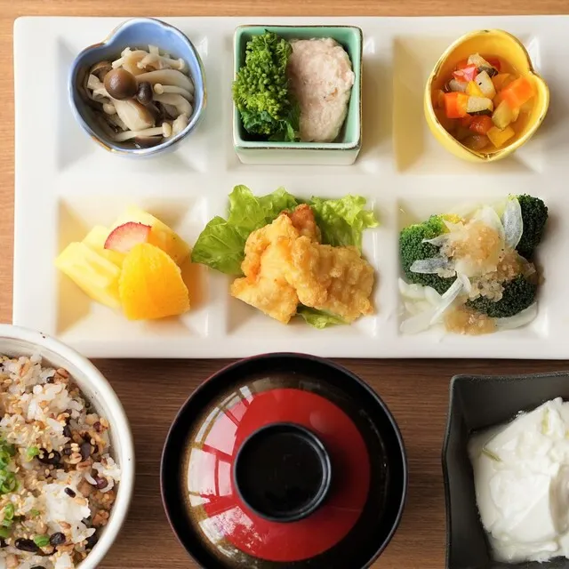
Tsugaru Onoe Onsen Higaeri Yado Fukuya
碇ケ関ドライブイン
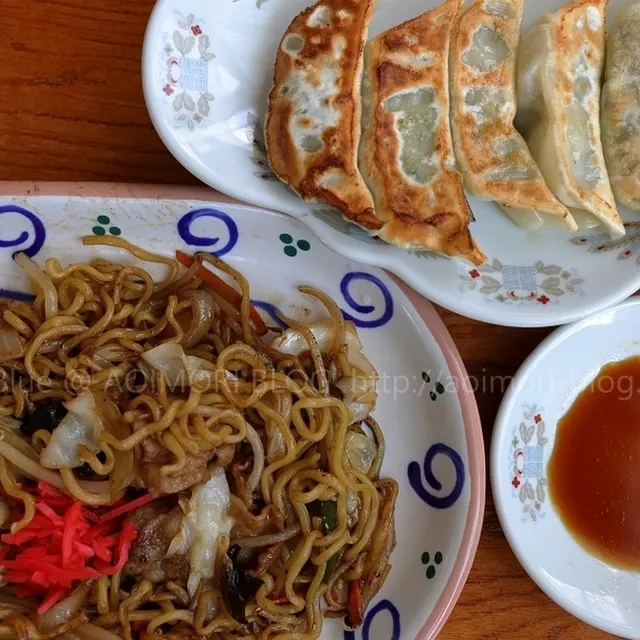
Ikari Ke Kan Doraibuin
御食事処 和乃葉
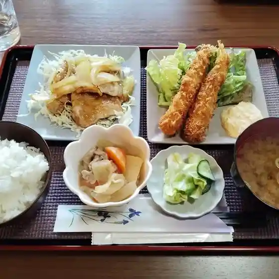
Mike Koto Tokoro Wa No Ha
ラズベリー
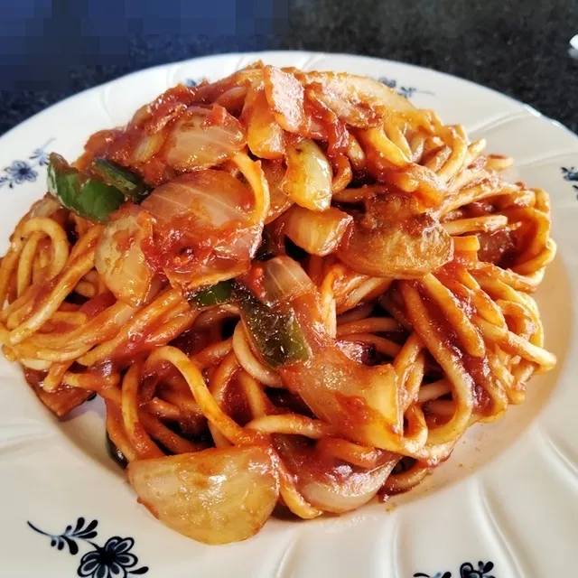
Razuberii
SIESTA
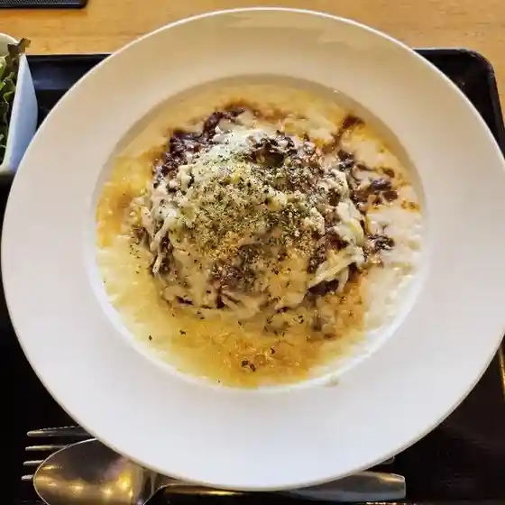
Siesta
藤
Fuji
セブンイレブン 津軽SA下り店
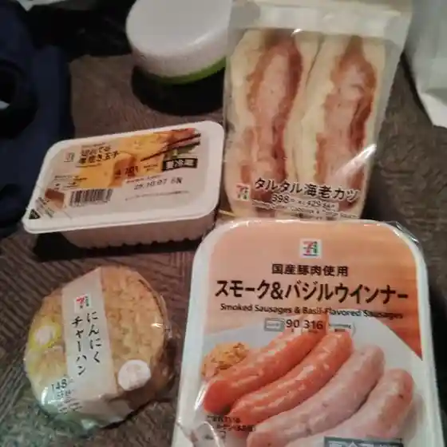
Sebun'Irebun Tsugaru Sa Kudari Mise
つくみ屋
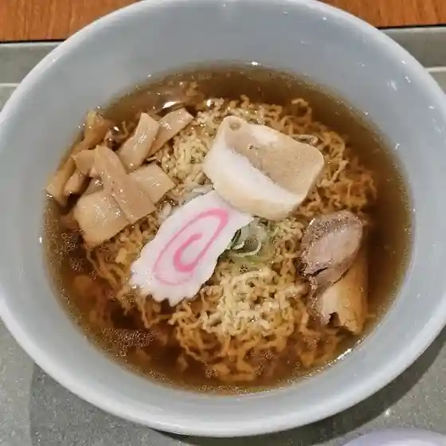
Tsukumi Ya
津軽路
Tsugaru Michi
憩い亭
Ikoi Tei
さるか荘
Saruka Sou
道の駅 いかりがせき 津軽関の庄
Michi No Eki Ikarigaseki Tsugaru Kan No Shou
産直センターひらか
Sanchoku Sentaa Hiraka
かなや食堂
Kanaya Shokudou
寿し処魚河岸
Hisashi Shi Tokoro Uogashi
焼肉弁当紀文
Yakiniku Bentou Kibun
ヘッチョ仕出し店
Hetcho Shidashi Mise
Bistro Chouchou
Bistro Chouchou
高砂食品
Takasago Shokuhin
つがる温泉
Tsugaru Onsen
大坊温泉 大坊保養センター
Daibou Onsen Daibou Hoyou Sentaa
ももさわ菓子舗
Momosawa Kashi Ho
中華そば おのまつ
Chuuka Soba Onomatsu
Sights
Kashiwagi Onsen
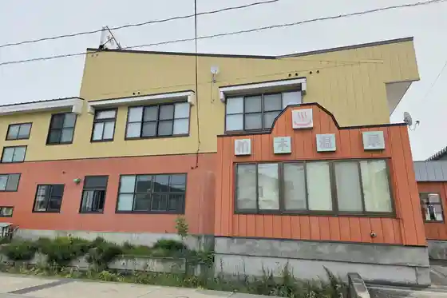
Hot spring bathhouse with chloride spring water and two family baths.
Tateda Onsen
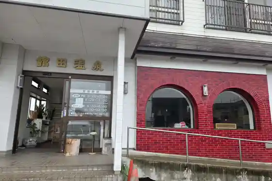
Hot spring with heat-retaining hot water and barrier-free family baths.
Mikasayama Park
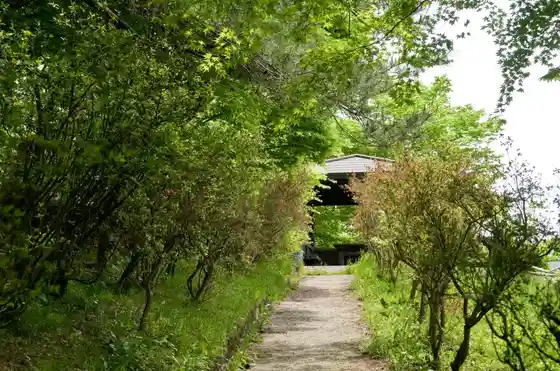
Hilltop park overlooking the Ikarigaseki hot spring town, with hydrangeas in early summer and autumn leaves.